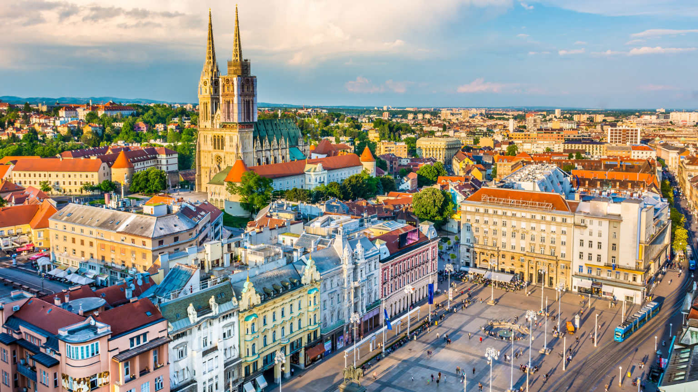

Zagreb
Zagreb je glavni grad Republike Hrvatske i najveći grad u Hrvatskoj po broju stanovnika. Šire područje grada okuplja više od milijun stanovnika. Povijesno gledajući, grad Zagreb je izrastao iz dva naselja na susjednim brežuljcima, Gradeca i Kaptola, koji čine jezgru današnjeg grada, njegovo povijesno središte.